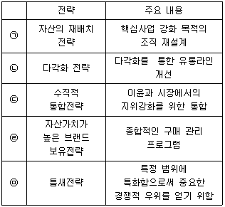
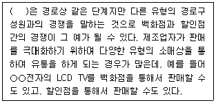
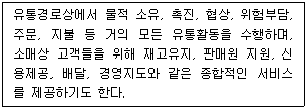
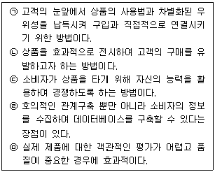
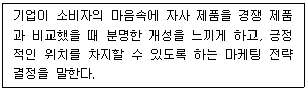
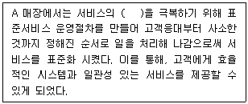
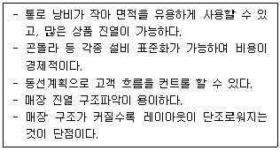
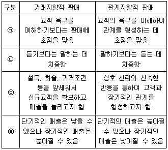
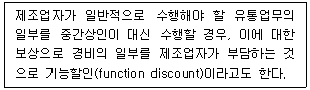
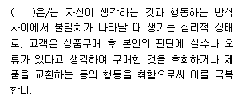

유통관리사-3급 (2022-11-19 기출문제)
1과목: 유통상식
1. 소비자가 관심이 있거나 자기의 욕구와 관련되는 자극에는 주의를 더 기울이고, 그렇지 않은 자극에는 주의를 기울이지 않는 지각의 유형으로 가장 옳은 것은?
- 지각적 조직화(perceptual organization)
- 지각적 방어(perceptual defense)
- 지각적 균형(perceptual equilibrium)
- 지각적 경계(perceptual vigilance)
- 지각적 유추(perceptual inference)
(정답률: 75%)

2. 유통의 기능 중 유통조성활동으로 가장 옳지 않은 것은?
- 잠재고객의 발견, 구매유발을 위한 판매상담 및 판매촉진활동
- 거래 과정에서 거래단위, 가격, 지불조건 등을 표준화시키는 활동
- 운전 자본 및 신용을 조달하고 관리하는 금융활동
- 유통과정에서 발생되는 물리적, 경제적 위험을 유통기관이 부담하는 위험부담활동
- 기업이 필요로 하는 합법적인 소비자 정보 및 상품정보를 수집 제공하는 활동
(정답률: 30%)
3. 청소년보호법(법률 제18550호, 2021.12.7., 일부개정)에서 정한 인터넷게임 제공자가 16세 미만의 청소년 회원가입자의 친권자등에게 고지해야 하는 사항에 해당하지 않는 것은?
- 제공되는 게임의 특성
- 게임의 유료화정책 등에 관한 기본적인 사항
- 제공되는 게임의 등급
- 인터넷게임의 판매·대여·유통 경로
- 인터넷게임 이용 등에 따른 결제정보
(정답률: 67%)
4. 전문점의 상품구색에 대한 설명으로 가장 옳지 않은 것은?
- 상품계열별로 거의 대부분의 품목들을 구비하고 있는 깊고 좁은 상품구색이다.
- 여러 종류의 상품계열을 취급하지 않기 때문에 비용이 적게 드는 이점이 있다.
- 제한된 상품계열의 전문성 확보를 통해서 고객만족을 실현하고자 한다.
- 상품에 대한 폭넓은 지식과 정보를 갖춘 전문판매원의 확보와 배치가 필요하다.
- 특정 상품계열에 대해 다양한 상품비교가 가능하기 때문에 소비자를 점포로 흡인할 수 있는 능력이 높다.
(정답률: 25%)
5. 서비스품질격차모형(Gap 모형)에서 고객이 기대했던 서비스와 실제 제공받은 서비스에 대한 격차에 해당하는 것은?
- Gap 1
- Gap 2
- Gap 3
- Gap 4
- Gap 5
(정답률: 42%)
6. 바코드 마킹 기법 중 소스마킹(source marking)에 대한 설명으로 가장 옳지 않은 것은?
- 제조 및 수출업자가 상품을 생산, 포장하면서 인쇄한다.
- POS시스템 도입으로 생선, 정육 등에 주로 사용한다.
- 유통업체의 매출등록 간편화, 표시비용이 절감된다.
- 광고 및 판매촉진의 효과를 측정할 수 있다.
- 재고관리의 효율성을 도모할 수 있다.
(정답률: 50%)
7. 양성평등기본법(법률 제18099호, 2021.4.20., 일부개정)에서 규정하고 있는 내용으로 가장 옳지 않은 것은?
- 양성평등정책 기본계획 및 추진체계
- 양성평등정책의 기본시책
- 여성발전기금
- 자녀 양육에 관한 모성 및 부성의 권리 보장
- 양성평등정책 관련 기관 및 시설과 단체 등의 지원
(정답률: 71%)
8. 도매상의 혁신전략과 주요 내용에 대한 설명으로 옳지 않은 것은?

- ㉠
- ㉡
- ㉢
- ㉣
- ㉤
(정답률: 68%)
9. 의류나 장난감처럼 한 가지 또는 한정된 상품에 전문화된 할인업태로 비용 절감과 저마진 정책을 통해 할인점보다 훨씬 저렴한 가격으로 판매하는 소매업태로 가장 옳은 것은?
- 백화점
- 전문점
- 카테고리킬러
- 회원제도매클럽
- 기업형 슈퍼마켓
(정답률: 55%)
10. 고가격 고마진의 백화점에 대해 저가격 저마진의 할인점이 등장하여 경쟁한 결과로 백화점과 할인점의 절충형인 새로운 형태의 소매점으로 진화된다는 소매상 발전이론은?
- 소매수명주기이론
- 소매업 수레바퀴이론
- 소매점 아코디언이론
- 진공지대이론
- 변증법적이론
(정답률: 34%)
11. 아래 글상자의 괄호 안에 들어갈 유통경쟁의 형태로 가장 옳은 것은?

- 수직적 마케팅 시스템 경쟁(vertical marketing system competition)
- 업태 간 경쟁(intertype competition)
- 수직적 경쟁(vertical competition)
- 경로시스템 간의 경쟁
- 전방통합 경쟁(forward integration competition)
(정답률: 36%)
12. 아래 글상자에서 설명하는 도매상으로 가장 옳은 것은?

- 진열 도매상
- 현금거래 도매상
- 트럭 도매상
- 직송 도매상
- 완전 서비스 도매상
(정답률: 63%)
13. 생산자와 소비자가 중간상을 거치지 않고 직접 거래할 경우에 발생할 수 있는 불편함으로 가장 옳지 않은 것은?
- 생산자와 소비자 상호 간의 정보불일치
- 생산량과 수요량의 불일치
- 생산지역과 소비지역의 불일치
- 생산자와 소비자 간의 시간적 불일치
- 생산지 가격과 소비자 가격 사이의 가격 불일치
(정답률: 50%)
14. 매장 내에서 판매원이 수행하는 역할에 대한 설명으로 가장 옳은 것은?
- 고객의 요구사항을 회사에 제대로 전달하는 상담자의 역할을 한다.
- 고객의 잠재욕구를 파악하여 판매를 성사시키는 서비스 제공자의 역할을 한다.
- 고객에게 제품 정보나 각종 제품 활용기법을 제공하는 정보 전달자의 역할을 한다.
- 고객이 느끼는 문제를 고객의 입장에서 해결해주는 수요창출자의 역할을 한다.
- 경쟁력 높은 제품을 개발하는 서비스제공자의 역할을 한다.
(정답률: 34%)
15. 판매예측을 위한 계량적 기법으로 가장 옳지 않은 것은?
- 상관관계법
- 이동평균법
- 지수평활법
- 회귀분석법
- 델파이기법
(정답률: 50%)
16. 점포 내 구매환경을 구성하는 요소로 가장 옳지 않은 것은?
- 매장면적
- 점포의 색채
- 매대배치
- 비품과 설비
- 상품의 품질
(정답률: 57%)
17. 판매원이 고객을 응대할 때 사용하는 용어에 대한 설명으로 가장 옳지 않은 것은?
- '~하지 마십시오'라는 부정형보다는 '~해주십시오' 라는 긍정형으로 이야기한다.
- '잠시만 기다려주시겠습니까?'의 경우 '잠깐만요'로 줄여서 간략하게 표현한다.
- 대기 시간이 발생한 경우 기다려주신 것에 대해 감사한 마음으로 '기다려주셔서 감사합니다'라고 표현한다.
- 감사의 인사는 의례적이지 않게 진심을 담아 표현한다.
- '네, 잘 알겠습니다'의 경우 고객의 시선을 바라보며 하는 것이 효과적이다.
(정답률: 88%)
18. 자신이 하고 있는 일이 사회나 기업을 위해 중요한 역할을 하고 있다고 믿고 수행하는 태도와 관련된 직업윤리를 의미하는 것으로 가장 옳은 것은?
- 소명의식
- 천명의식
- 직분의식
- 책임의식
- 봉사의식
(정답률: 34%)
19. 유통의 필요성 중 변동비우위의 원리에 대한 설명으로 가장 옳은 것은?
- 중간상이 개입함으로써 전체 거래빈도의 수가 감소하여 거래를 위한 총비용을 낮출 수 있다.
- 제조업체가 수행할 보관, 위험부담, 정보수집 등에 대한 업무를 유통업체가 대신함으로써 변동비를 낮출 수 있다.
- 고정비 비중이 큰 제조업체와 변동비 비중이 높은 유통기관이 적절한 역할분담을 통해 비용 면에서 경쟁우위를 차지할 수 있다.
- 생산자와 소비자 사이에 중간상이 개입함으로써 사회 전체 보관의 총비용을 감소시킬 수 있다.
- 도매상이 상품을 집중적으로 대량보관함으로써 제조업체가 지불해야하는 재고비용의 절감효과를 갖는다.
(정답률: 55%)
20. 유통경로의 본질적인 기능으로 가장 옳지 않은 것은?
- 거래의 촉진 및 효율성 증대
- 제품구색의 불일치 완화 및 쇼핑편의성 제고
- 거래의 단순화 및 거래비용 절감
- 소비자 욕구 및 구매관련 정보탐색의 용이성
- 경로 간 경쟁으로 혁신적 발전 촉진
(정답률: 46%)
2과목: 판매 및 고객관리
21. 소비자의 구매의사결정과정의 순서로 가장 옳은 것은?
- 정보 탐색 - 문제 인식 – 이해 - 대안 평가 – 구매 - 구매 후 평가
- 노출 – 주의 – 이해 – 기억 – 구매 - 구매 후 평가
- 정보 탐색 – 기억 - 문제 인식 - 대안 평가 – 구매 - 구매 후 평가
- 문제 인식 - 정보 탐색 - 대안 평가 – 구매 – 구매 후 평가
- 문제 인식 - 정보 탐색 - 대안 평가 – 기억 – 구매 - 구매 후 평가
(정답률: 42%)
22. 아래 글상자의 소비자 판매촉진에 대한 설명과 그 종류의 연결이 가장 옳은 것은?

- ㉠ 디스플레이(display)
- ㉡ 프리미엄(premium)
- ㉢ 추첨(sweepstakes)
- ㉣ 콘테스트(contest)
- ㉤ 샘플(sample)
(정답률: 52%)
23. 상품의 포장(packing)에 대한 설명으로 옳지 않은 것은?
- 포장은 물품을 수송, 보관함에 있어서 가치 또는 상태를 보존하기 위해서 적절한 재료, 용기 등을 물품에 가하는 기술 또는 상태를 의미한다.
- 포장은 종종 판매증진뿐만 아니라 다른 중요한 운영활동의 수행을 용이하게 한다.
- 포장은 선적과 보관, 진열할 때의 용이성, 그리고 다른 환경적인 요구사항들을 충족시켜야 하며, 상품의 확인을 돕고, 그렇게 함으로써 지각상의 장애를 제거한다.
- 공업포장은 구매자 또는 소비자와 직접 접촉한다는 것을 염두에 두어야 하는 반면, 상업포장은 상품보호가 가장 중요하므로 최우선으로 하여야 한다.
- 소비자가 상품을 편리하게 운반하고 사용하게 하는 기능이 있으며, 상품포장의 기능은 크게 상품기능, 의사 전달기능, 가격기능 등으로 분류된다.
(정답률: 38%)
24. 고객에게 접근하기 위한 기회를 포착하는 판매원의 대기 자세로 가장 옳지 않은 것은?
- 부드럽고 밝은 표정을 담은 채 고객의 태도나 동작을 관찰한다.
- 고객의 요구에 신속히 응대할 수 있는 가장 편리한 장소에 위치한다.
- 고객이 부담을 느끼지 않도록 고객을 응시하지 말고 다른 업무를 이행하면서 조심스럽게 고객을 관찰한다.
- 고객이 직원의 전문성을 파악할 수 있도록 직원 간의 업무에 대한 대화에 집중한다.
- 친절한 인사로 고객에게 호의적인 감정을 전달하고 부드러운 분위기를 연출한다.
(정답률: 63%)
25. 고객에게 칭찬을 할 경우 바람직한 방법으로 가장 옳지 않은 것은?
- 비교하거나, 대조하여 확실하게 칭찬하는 것이 효과적이다.
- 구체적인 근거를 들어 칭찬을 한다.
- 고객의 선택을 지지하여 칭찬을 한다.
- 고객이 생각지도 못한 부분을 발견하여 칭찬하는 것은 고객에게 불쾌감을 줄 수 있다.
- 마음속에서 우러나지 않는 무성의한 칭찬은 지양해야 한다.
(정답률: 46%)
26. 불만 고객 응대 시 주의사항으로 가장 옳지 않은 것은?
- 감정적 표현을 피하고 객관적으로 불만사항을 검토한다.
- 고객의 화가 풀릴 때까지 불만을 느낀 이유에 대해 구체적으로 토론한다.
- 고객의 불만 사항을 정확하게 파악하여 문제의 개선방안을 모색한다.
- 정중한 언행으로 대하며 책임 의식을 가진다.
- 고객의 불만을 해소하기 위한 적극적인 자세로 임한다.
(정답률: 57%)
27. 상품에 대한 설명으로 가장 옳지 않은 것은?
- 소비자가 받게 될 혜택의 묶음이다.
- 소비자는 상품의 사용을 통해 효용을 얻는다.
- 시장에서 경제적 교환의 대상이 된다.
- 유형재는 물론 무형재도 포함한다.
- 상표는 상품에 포함되지 않는다.
(정답률: 40%)
28. 고객충성도 관리과정은 기반 구축, 유대 강화, 이탈 방지 등으로 구성된다. 판매원을 활용한 유대 강화의 방법으로 가장 옳은 것은?
- 고객서비스의 등급화
- 연관판매의 확대
- 맞춤화 유대의 강화
- 사회적 유대의 강화
- 구조적 유대의 강화
(정답률: 25%)
29. 식품의약품안전처는 안전과 품질 확보를 위한 공통사항을 정하고 제품에 대한 정보 제공을 용이하게 하기 위해 식품 유형을 분류하는 기준을 마련하고 있다. 식품의약품안전처에서 가공식품의 유형을 분류할 때 고려하는 사항으로 옳지 않은 것은?
- 식품의 섭취대상
- 식품의 원료 또는 성분
- 식품의 물리·화학적 변화를 유발하는 가공방법
- 식품의 소매판매용 혹은 산업중간재 여부
- 식품의 형태
(정답률: 32%)
30. 효과적인 판매를 위해 판매원이 관리해야 할 요소들에 대한 설명으로 가장 옳지 않은 것은?
- 고객이 원하는 상품이 매장에 준비되어 있도록 상품관리를 한다.
- 고객의 입장을 헤아리며 고객응대관리를 한다.
- 고객이 부담 없이 즐기며 돌아볼 수 있게 매장관리를 한다.
- 고객을 잘 파악하여 재구매가 일어날 수 있게 고객관리를 한다.
- 고객이 확신을 가질 수 있게 재무관리를 한다.
(정답률: 63%)
31. 아래 글상자에서 설명하고 있는 마케팅전략 요소로 가장 옳은 것은?

- 포스팅(posting)
- 포지셔닝(positioning)
- 표적시장(targeting)
- 교차 판매(cross selling)
- 촉진 판매(promotion)
(정답률: 42%)
32. 매장 내 구매시점(POP) 광고의 기능으로 가장 옳지 않은 것은?
- 분위기연출 기능
- 상품설명 기능
- 행사안내 기능
- 상품주문 기능
- 인건비 절감 기능
(정답률: 34%)
33. 아래 글상자의 괄호 안에 들어갈 서비스의 특징으로 가장 옳은 것은?

- 무형성
- 비분리성
- 이질성
- 소멸성
- 통합성
(정답률: 38%)
34. 깊고 넓은 상품구색을 갖춘 매장이 가지는 장점으로 가장 옳지 않은 것은?
- 다양한 상품을 접할 수 있어 일괄구매가 가능하다.
- 상품선택의 폭이 넓어 구매 만족수준이 높다.
- 소비자를 점포로 흡인할 수 있는 능력이 높다.
- 재고 유지·관리에 대한 비용 부담이 적다.
- 매장면적을 크게 형성하는 데 유리하다.
(정답률: 57%)
35. 아래 글상자에서 설명하는 레이아웃의 종류로 가장 옳은 것은?

- 상하수직형 레이아웃
- 자유통행형 레이아웃
- 귀갑형 레이아웃
- 그리드형 레이아웃
- 수평형 레이아웃
(정답률: 34%)
36. 판매를 위한 디스플레이 및 상품연출 기법에 대한 설명으로 가장 옳지 않은 것은?
- 상황에 적합한 이미지를 연출하기 위해 상품의 성격을 파악한다.
- 상품의 특징을 명확히 보여주도록 연출한다.
- 상품연출은 판매를 위한 견본 전시이므로 무리한 연출로 상품에 손상이 가서는 안 된다.
- 춘하추동 계절감을 비롯하여 설날, 추석 등 판매적기를 파악하여 연출방법을 세분화시킨다.
- 상품주기를 기본으로 품목에 따라 쇠퇴기와 소멸기의 상품을 부각시킨다.
(정답률: 50%)
37. 고객응대의 기본원칙에 대한 설명으로 가장 옳지 않은 것은?
- 균일성의 원칙: 고객을 동일하게 응대하는 것이 바람직하다.
- 공평성의 원칙: 모든 고객은 차별 없이 공평하게 응대해야 한다.
- 신속성의 원칙: 고객을 오래 기다리게 해서는 안 된다.
- 마케팅믹스의 원칙: 고객에게 제품에 대한 정보를 충분히 제공해야 한다.
- 고객중심의 원칙: 고객이 무엇을 원하는지 파악해야 한다.
(정답률: 46%)
38. 아래 글상자의 거래지향적 판매와 관계지향적 판매에 관한 상대적인 비교 설명 중에서 옳지 않은 것만을 바르게 나열한 것은?

- ㉠
- ㉠, ㉡
- ㉡, ㉢
- ㉢, ㉣
- ㉣
(정답률: 59%)
39. 적용 대상이 기존 제품 카테고리인지 아니면 신규 제품 카테고리인지를 기준으로 브랜드전략을 분류하기도 한다. 기존 제품 카테고리의 자사 브랜드가 차지하는 소매점포 매대의 할당면적을 확대하고 싶은 제조업체의 상표전략으로 가장 옳은 것은?
- 브랜드확장전략
- 공동브랜드전략
- 신규브랜드전략
- 복수브랜드전략
- 노(no)브랜드전략
(정답률: 17%)
40. 아래 글상자에서 설명하는 가격할인의 유형으로 가장 옳은 것은?

- 수량할인
- 현금할인
- 거래 할인
- 상품 지원금
- 판매촉진 지원금
(정답률: 34%)
41. 점포 레이아웃의 단계를 바르게 나열한 것으로 가장 옳은 것은?
- 점포레이아웃 → 부문레이아웃 → 매장레이아웃 → 곤돌라레이아웃 → 페이스레이아웃
- 매장레이아웃 → 부문레이아웃 → 곤돌라레이아웃 → 페이스레이아웃 → 점포레이아웃
- 부문레이아웃 → 매장레이아웃 → 점포레이아웃 → 페이스레이아웃 → 곤돌라레이아웃
- 점포레이아웃 → 매장레이아웃 → 곤돌라레이아웃 → 부문레이아웃 → 페이스레이아웃
- 점포레이아웃 → 매장레이아웃 → 부문레이아웃 → 곤돌라레이아웃 → 페이스레이아웃
(정답률: 25%)
42. 상품라인의 하향확장이 적합한 상황으로 가장 옳지 않은 것은?
- 저가격 시장에서 강력한 성장기회를 발견한 경우
- 기존시장으로 진출하려는 강력한 저가격 경쟁사를 방어하려는 경우
- 고가격대 시장에서 판매가 부진하거나 쇠퇴하고 있다고 판단한 경우
- 더 높은 마진과 함께 이미지를 제고하려는 경우
- 기존상품보다 대중적인 상품을 출시하여 최대한 시장점유율을 높이려는 경우
(정답률: 42%)
43. 매장의 공간 구성에 대한 설명으로 가장 옳지 않은 것은?
- 매장이 어느 지역에 위치해야 하는가의 결정에서부터 매장의 공간 구성이 시작된다.
- 건물외관과 매장기능 및 편의시설의 기능이 적절하게 조합되도록 구성한다.
- 동일기능을 집중하여 배치하고 고객출입구와 서비스 기능을 분리하여 운영한다.
- 통로는 고객이 원활히 목적지로 이동하는 동시에 상품 운반이 용이하도록 설계한다.
- 재해대책 및 비상대피계획을 사전에 수립하여 공간 구성에 반영해야 한다.
(정답률: 13%)
44. 소비자가 구매하는 제품이 주는 특정한 편익(benefit)에 대한 설명으로 가장 옳은 것은?
- 모든 편익은 계량적으로 손쉽게 측정할 수 있다.
- 상징적 편익은 소비자가 보관가능한 제품을 구매할 때 얻는 것을 말한다.
- 기능적 편익은 소비자의 needs(필요)를 충족시켜줄 수 있는 제품의 속성에서 발생한다.
- 경험적 편익은 기존에 구매한 제품보다 가격이나 품질이 우수하다고 생각할 때 발생한다.
- 쾌락적 편익은 다른 사람보다 저렴한 가격으로 구매했을 때 발생한다.
(정답률: 46%)
45. 아래 글상자의 괄호 안에 들어갈 용어로 가장 옳은 것은?

- 포괄적 문제해결행동
- 탐색적 문제해결행동
- 귀인적 사고
- 인지부조화
- 소비자편익의 불일치
(정답률: 36%)